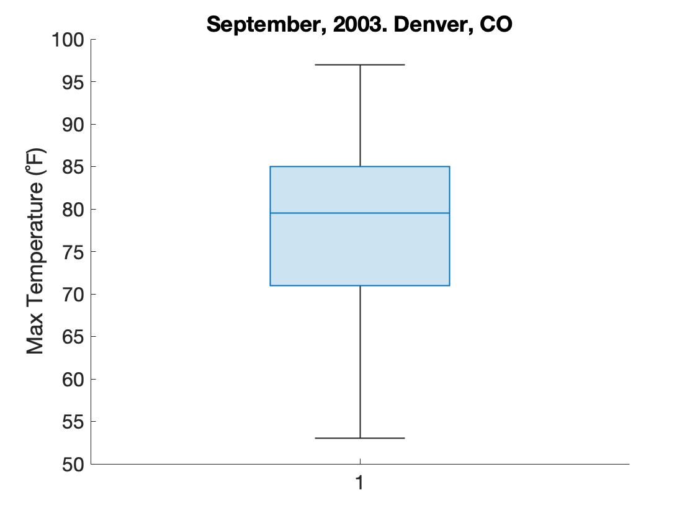

Basic Plotting
Once you have a figure with an axis (see previous section), you can then add a plot to that axis. MATLAB has extensive plotting capabilities, including bar, scatter, and line plots.
Overview
Functions You Should know
Useful References
The following site is an excellent resource for comparing types of plots and determining when and how you should use them:
Not sure whether you should use a bar chart or a box plot? Check out these articles:
- Bar charts and box plots: this article in Neuron nicely summarizes when you should use a bar plot and when you should use a box plot.
- Box Plots v Bar Plots: this author falls strongly in the box plot camp
Interested in learning more about Swarm charts? Read these articles:
Plots Tab
The simplest way to explore MATLAB's plotting capabilities is through the "Plots" tab in the ribbon interface.
Note
To actually select an option in the Plots Tab, you will need to first select a variable in the workspace that is capable of being plotted as the selected plot type (e.g. a vector of numbers).
Sample data
In this module, we will use a spreadsheet file that contains historical weather information from Denver in September, 2013. The following import this weather data directly into a table variable:
| Load Weather Data | |
|---|---|
you should end up with a table variable,
T
T is a 30X23 table variable. Each row in the table contains the data from a given day in September 2013, while each column contains a different metric like Max or Min Temperature.
We can see the names of all the Column Headers in the table (remember, these are called variables in the table) by access the VariableNames field in the Table Properties, as follows:
ans =
231 cell array
{'MDT' }
{'MaxTemperatureF' }
{'MeanTemperatureF' }
{'MinTemperatureF' }
{'MaxDewPointF' }
...
So, we have a lot of data to work with. Let's get cracking!
Function Call Commonalities
In this module, we focus on the following plotting functions:
- Line Plots: Used to track changes over short or long periods time. Use line plots for smaller changes and bar plots for larger changes
- Scatter Plots: - Also known as an X-Y plot. Used to determine the relationship between two different things (think correlations).
- Bar Plots: Used to graph categorical data or data sorted into groups. Keep the following in mind as you work through these examples.
- Hisgtograms: Used to plot the distribution of a set of observations
- Box charts: Used to plot the summary statistics for a set of observations
The following are some similarities that can be seen across these functions:
-
The first input into these functions will typically be a vector of data. For the Bar and Line plots, we will be inputting the Y values. If you input only one vector of data, then x-values are assumed to simply increment by one.
-
If you input two vectors of data, the first vector will be treated as the X-data and the second vector the Y-data.
-
After the data inputs, the rest of the inputs typically deal with the appearance of the plot (such as line thick, bar color, or marker appearance).
-
Line specifications are character shorthand for specifying how the plot should look like. For example,
'r--'means plot a red, dashed line. Review the documentation for more information
Line Plots
Use Line plots (or line graphs) when you want to show value changing over time, or when you want to compare how several things change over time relative to each other. The key phrase over time, is your best clue to consider using a line graph for your data (SWD).
To create a line graph in MATLAB, we use the function plot. There are several ways to call plot. Here are a few examples.
Example 1: Line Graph with just a y- input
The change in daily temperature over the course of a month meets the criteria for a line graph rather nicely. In our table, T, we have a column called "MaxTemperatureF", which is simply the maximum temperature recorded on a given day. Recall that each row in the table represents a different day.
Create a line graph using the function plot as follows:
In this function call, plot assumes that you are inputting the y-values, so it automatically provides the x-values (basically a vector matching the length of the input vector comprised of increasing integers starting at one). Notice that we did not first execute the functions figure and axes. We could have, but instead, we had MATLAB do it automatically. If there is no existing axis or figure, the MATLAB plotting functions will simply create one. But be carefulif a plot already exists, MATLAB will simply overwrite the old plot with the new one, which may or may not be what you want.
You can then add plot labels as follows:
| Add Plot Labels | |
|---|---|
And the end result should look like this:
Here we plot a Line Graph of Maximum Daily Temperatures in Denver, 2013.
Example 2: Line Graph with both x- and y- inputs
Our table T has a column called "MDT" which is simply the date of each day. If we input two vectors into the function plot, these vectors are treated as X and Y inputs. Inputs beyond the first two inputs are treated as line specifications.
Here we input the date as the X-data and the Minimum Daily temperature as the Y-data.
| Line Plot - multiple inputs | |
|---|---|

Notice in this plot how the date information from the "MDT" column is automatically displayed in a highly readable format on the x-axis. Also notice that line specification 'm:' indicated that function should plot a magenta, dotted line, while the paired input of "LineWidth", 2, indicated how thick the line should be (thicker than the default). Since we created a plot in the previous section, we call the function
figurehere to create a new window (and not overwrite the old plot)
The function plot returns a handle to the line graph, assigned here to the variable hp. You can explore the properties of this object by simply typing hp into the command window:
hp =
Line with properties:
Color: [1 0 1]
LineStyle: ':'
LineWidth: 2
Marker: 'none'
MarkerSize: 6
MarkerFaceColor: 'none'
XData: [130 datetime]
YData: [130 double]
ZData: [10 double]
Show all properties
Notice the LineWidth property is set to 2 and the "Color" is set to [1 0 1], which is "magenta". You can change the property of the line graph by manipulating these fields. Try it out now. Add the following line after the plot function call and re-run the code block
| Modify Plot Properties | |
|---|---|
what happens?(1)
- The line turns blue
Example 3: Multiple Plot Lines
Multiple Line plots can be created in one function call simply by entering the x- and y- data in series. In this example, we input both the maximum and minimum temperatures.
| Plot Multiple Lines | |
|---|---|
Notice that we input x twice into plot. First, as the x for T.MinTemperatureF line and then as the x for T.MaxTemperatureF line. Also notice the function call to legend, which allows us to add a legend to the plot.
Line Plot Challenge
Use the property inspector to manually change the line plot so that it looks like this:
Hint: Look under the "Markers" and "Color And Styling" tabs in the property inspector
Challenge - Format the Line Plot Programmatically
Review the MATLAB documentation for plot and use a single call to plot to display the following:
Notice that we are adding a third line of data. You can find this data in table T T.MeanTemperatureF field. Don't forget to change the figure color to white. You will need to call following functions:
- figure
- plot
- xlabel
- ylabel
- legend
In that order. And you will need to add a line specifications for each plot.
Notice that the line specifications for each line immediate follow the x and y coordinates.
Bar Plots
Bar plots are great for reporting the counts of something. You typically use bar plots to graph categorical data or data sorted into groups.
We use the function bar to create a bar plot. Here we plot the daily maximum temperatures in September:
| Bar Plot | |
|---|---|

In this plot, there are 30 bars, one for each day of the month. We increased the transparency of the bar color (using the FaceAlpha property) for aesthetic reasonsfull opaqueness (FaceAlpha=1) creates very dark blue bars. MATLAB automatically recognizes the date info in the MDT column, and nicely formats the x-axis with the dates. Notice how you can easily track the temperature trends throughout the month: our eyes are very good at comparing lengths when objects are aligned (SWD)
If you want a horizontal bar plot, you need to use the function barh. Everything else is mostly same.
| Horizontal Bar Plot | |
|---|---|

Distribution Plots
Distribution plots are used to plot the frequencies of a set of observations.
Histograms
Histograms are used to plot the frequency distribution of a data set. These are different from bar plots, which are used to plot different categories of observations (see above). When you create a histogram, you group the data into bins and then plot the bins.
For example, we can use a histogram to plot the distribution of the Maximum Temperatures in September.
| Histogram of Max Temps | |
|---|---|

Here, instead of plotting every single temperature for every day, like we did with the bar plot, we bin the data into 1-degree bins, and then plot the bins (this is all handled by the
histogramfunction). So, in this plot, 3 temperatures fell between 75.5 and 76.5. So, we got one bar spanning 75.5-76.5 with a height of 3. The histogram also gives us a nice overview of the temperature distributions. For example, we can see there was only one day with a temperature below 55F and relatively few days above 95C.
Sometimes, the default bin selection used by histogram produces a plot that is a little sparse or doesn't quite represent the distribution as it should. You can manually set the numbers of bins used in the histogram by adding a second input to the function as follows:
| Histogram of Max Temps | |
|---|---|
Here is the exact same data but using a histogram with just 10 bars (more of the temperature data have been binned together). In this histogram, you can see a little more shape to the distribution of temps.(1)
- Be careful when changing the number of bins that you use in a histogram. The proper number of bins used in a histogram is an arcane subject and there are many papers on the matter that are well beyond the scope of this module. Suffice it to say, you can risk misrepresenting the data if you use a number of bins that does not truly accurate represent the distribution of the data (e.g. overly binned so the the true shape of the distribution is hidden).
Box Plots
A box plot is a visual representation of the summary statistics for the data. These plots show the median (line inside box), the interquartile range (the box), and the data range (the whiskers). You also have outliers (circles), which are data points that are 1.5 x the interquartile range.

The function boxchart creates box plots (1).
- There is also a function called
boxplotthat comes with the Statistics and Machine Learning Toolbox. Its plots are not quite as pretty, but you can have more control over the different aspects of the plot.
| Box Plot of Max Temperatures | |
|---|---|

This plot represents the exact same data seen in the histogram above, but as a box plot. The box represents the interquartile range of data (or the middle half of the data) and ranges from 70-85 F. This tells us that the middle half of the maximum temperatures fall in this range. The line inside the box is the median, which is 79.5 F. So, we know that half of all maximum temperatures are above and the other half are below 79.5 F. And the whiskers represent the range. So, as we saw in the histograms above, the range of temperatures fall between 53 F and 97 F.
Multiple Box Plots
We can plot multiple box plots in the same axis by inputting a matrix of values. Let's plot the Min and Max Temperatures as box plots in the same figure:
| Multiple Box Plots in same Axes | |
|---|---|
Box plots of Minimum and Maximum temperatures. Here, we concatenate the Minimum and Maximum Temperatures into a 30X2 matrix and input that matrix into
boxchart. We also turnNotch on, which adds notches to the sides of the boxes and can be used to statistically compare medians. When we input a matrix intoboxchart, the default tick labels for the x-axis are1and2:1for the first column and2for the second column in the matrix. This is not especially informative, so we replace1and2with'Min'and'Max'using thexticklabelsfunction.
Inputting a matrix into boxchart only works if you have the same number of data points for each category (Min and Max). If you have a different number of data points for the different categories, then you can use a grouping variable as we discuss on the Group Statistics page.
How would you add a box of mean temperatures ('MeanTempF') to the axes above?
You would need to modify the y-input:
y = [T.MinTemperatureF T.MeanTemperatureF T.MaxTemperatureF]; % create three-column matrix of data
boxchart(y,'Notch','on') % plot data as box plots
xticklabels({'Min' 'Mean' 'Max'}) % add 'Mean' as a tick label
ylabel('Temperature (F)') % add a label to the y-axis
ylim([32 100]) % set y-axis limits
- Notice that we had to update
yand thexticklabelsinput
Swarm Plots
Swarm Charts are one-dimensional plots of all the data. So, we are not binning or summarizing the datawe are showing all the data. These charts also use some math to create shapes that indicate regions of high density or outliers.
Unlike the boxchart function, which accepts a single vector of data, the swarmchart function requires at minimum two inputs: an x and a y input. So, if you have a single vector of data to plot, like the Minimum Temperatures, you need to create an x vector of the same length, but with a constant value, like 1. In effect, you are creating a scatter plot, but where the x-coordinate for each data point is exactly the same.
Here's an example of how to plot maximum temperatures as a swarm chart:
| Swarm Chart of Max Temperatures | |
|---|---|
Swarm Chart of Maximum Temperatures. Temperature (C) is plotted along the y-axis, while the x-coordinates of the data points randomly jitter around 1. If we changed
xfrom a vector of1's to a vector of100's, then the values would jitter around100. Notice how the shape of the swarm is dependent on the distribution of the data: the widest part of the plot is along the median temperature of79.5F, whereas the narrowest parts of the plot have the fewest data points.
Multiple Swarm Charts
To plot multiple swarm charts in the same plot, you stack vectors (instead of creating a matrix like for boxchart or barplot).
In the following example, we plot both the Minimum and Maximum Temperatures. For the x input, we concatenate a series of 1's followed by a series of 2's. The we typecast this vector into a categorical array, so we can associate the label "Min" with the value 1 and the label "Max" with the value 2. For the y, we concatenate the Min and Max Temperatures into a single vector. And then, for a more pleasing aesthetic, we add some additional inputs into the function swarmchart to modify the face color, transparency, and jitter width of the data points.
Min and Max Temperatures. While the temperature is still plotted along the y-axis, the x-axis now reads "Min" and "Max" instead of 1 and 2. Notice how we tightened up the spread of the data points by modifying "XJitterWidth" setting. By filling in the faces of the data points and adjusting the transparency, we also improve the aesthetics of the plot.
A swarm chart can be extra informative when overlaid with a box plot. Review the Advanced Plotting: Overlays,Transparencies, and Tiling page for an example of how to do this.
Scatter Plots
We use a scatter plot to visualize the relationship between two numerical variables. The shape of the plot can give you some indication as to the nature of that relationship. For example, a scatter plot in which the dots are higher on the right side of the plot vs the left side of the plot typically indicates that the two variables are positively correlated (When the x is high, the y is high).
For example, we can use a scatter plot to visualize the relationship between minimum and maximum temperatures in a day, as follows:
Here, we use the function scatter to generate a scatter plot. Unlike the bar or line functions, the scatter function requires that the first two inputs are x and y vectors. After these inputs, scatter allows for formatting specifications such as
- size of dots is 50
- color of dots is black
- dots are filled (a solid color, not just outlines of circles)
The order of these formatting inputs is critical, which you can review in the scatter documentation. If you assign an output from scatter, you get a handle, hs which allows you to modify the properties of the markers plotted. Here, we use hs to make the dots more transparent.
And we get a scatter plot that looks like this:
Overall, the rising trend of the plot, with the dots higher on the right side, suggests that the two series are positively correlated, which makes sense for daily temperatures. Temperatures in any given day are usually highly correlated: if it's warm during the day, it will usually be warmer at night (unless a cold front comes sweeping in).